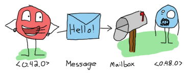

Crypto + Concurrency
Anna Neyzberg • @ANeyzb • anna@carbonfive.com
About me:
- I co-founded ElixrBridge founders

What I want to talk about today?
- What is Bitcoin/Blockcahin
- How does it work?
- Why try and build it in elixir
Bitcoin uses blockchain to implement decentralized leger for payemnts
It is a secure semi-annonymous store of value
what is value
credit: https://en.wikipedia.org/wiki/History_of_money
History of money
credit: https://steemit.com/steemit/@cryptomoni/6-stages-of-history-and-evolution-of-money
1971 - Nixon breaks from bretton woods and cancels convertiblilyt of us dollars to gold./h1>
-
first time we have a stoer of value that is comletely digital
-
people are willing to use and can excahnge for goods and servces
- it is scarce
Cryptography
credit: https://medium.com/swlh/cypherpunks-and-the-rise-of-cryptocurrencies-899011538907
"Privacy is necessary for an open society in the electronic age. ... We cannot expect governments, corporations, or other large, faceless organizations to grant us privacy ... We must defend our own privacy if we expect to have any. ... Cypherpunks write code. We know that someone has to write software to defend privacy, and ... we're going to write it.""
credit: Eric Hughes "A Cypherpunk's Manifesto"
credit: https://www.askbjoernhansen.com/2004/12/15/foolish_verifie.html/div>
Many Early attempts at digitial currencies failed
2008 Financial Crisis happened
Bitcoin Goes live in 2009
“With e-currency based on cryptographic proof, without the need to trust a third party middleman, money can be secure and transactions effortless.” — Satoshi Nakamoto


So why think about this in the context of Elixir?
Network of distributed nodes that each have a copy of the block chain and communicate via message passing
So how do we build that?
Let's take a quick look at how messge passing works in elixir
```elixir
defmodule Example do
def subtract(a, b) do
end
end
iex> Example.subtract(3, 2)
1
:ok
```
```elixir
spawn(Example, :subtract, [3, 2])
1
#PID<0.80.0>
```
```elixir
defmodule Greet do
def by_name do
receive do
{:name, name} -> IO.puts("Hello #{name}")
end
by_name
end
end
iex> pid = spawn(Greet, :by_name, [])
#PID<0.108.0>
iex> send pid, {:name, "Ben"}
"Hello Ben"
{:name, "Ben"}
iex> send pid, :ok
:ok
```
Process Linking & Process Montioring
Back to BlockChain
We know we need to somehow build a chain of blocks
So let's start with a single block
```elixir
defmodule Block do
defstruct nonce: nil, previous_hash: nil, transaction: nil
def create({:initial, work_factor}, transaction) do
,,,
end
def create({:previous_hash, previous_hash, work_factor}, transaction) do
hash_info = mint(previous_hash, work_factor)
%Block{nonce: hash_info.nonce, previous_hash: previous_hash, transaction: transaction}
end
def mint(previous_hash, work_factor) do
nonce = 0
.....
create_hash(previous_hash, nonce, matcher)
end
def create_hash(previous_hash, nonce, matcher) do
stringified_nonce = Integer.to_string(nonce)
hash = :crypto.hash(:sha256, [previous_hash, stringified_nonce])
|> Base.encode16
|> String.downcase
match? = matcher
|> matches?(hash)
case match? do
false ->
nonce = nonce + 1
create_hash(previous_hash, nonce, matcher)
true ->
%{nonce: nonce, previous_hash: previous_hash, hash: hash}
end
end
....
end
```
Ok, we have a block....How to we create a chain
```elixir
defmodule Gossip.BlockChain do
@work_factor 1
@me __MODULE__
@block_reward 100
defstruct blocks: [], pub_key: nil, priv_key: nil
def start_link() do
{:ok, pid} = Agent.start_link(&initial_state/0, name: @me)
end
def child_spec(_opts) do
%{
id: __MODULE__,
start: {__MODULE__, :start_link, []},
type: :worker,
restart: :permanent,
shutdown: 500
}
end
def initial_state do
{priv_key, pub_key} = RSA.generate_rsa
%BlockChain{blocks: [], priv_key: priv_key, pub_key: pub_key}
end
end
```
```elixir
defmodule BlockChain do
@work_factor 1
@me __MODULE__
@block_reward 100
defstruct blocks: [], pub_key: nil, priv_key: nil
def start_link() do
{:ok, pid} = Agent.start_link(&initial_state/0, name: @me)
end
def child_spec(_opts) do
%{
id: __MODULE__,
start: {__MODULE__, :start_link, []},
type: :worker,
restart: :permanent,
shutdown: 500
}
end
end
```
How do we set this up?
```elixir
defmodule Application do
use Application
use Supervisor
def start(_type, _args) do
Supervisor.start_link([{Gossip.BlockChain, []}], strategy: :one_for_one, name: BlockChain.Supervisor)
end
end
```
Supervisors makes fault tolerance easy
And fault tolerance is what we want in a distributed blockchain system
Let's look at our blockchain module again
```elixir
defmodule Gossip.BlockChain do
@work_factor 1
@me __MODULE__
@block_reward 100
....
def add_block(transaction) do
add_new_block(transaction)
end
...
def update_and_retrieve_chain(block) do
case Agent.update(@me, fn(block_chain) -> %{block_chain | blocks: [block | block_chain.blocks] } end ) do
:ok ->
get_state
_ -> IO.puts "did not update"
end
end
def add_new_block(transaction) do
..
case Transaction.valid?(pub_key, transaction) do
{:ok, true} ->
# create new block
update_and_retrieve_chain(block)
_ ->
IO.puts "Invalid Transaction #{ transaction}"
end
end
end
```
A quick note about transactions
```elixir
defmodule Gossip.Transaction do
alias Gossip.Transaction
alias Gossip.RSA
defstruct to: '', from: '', amount: 0, signature: ''
def new_transaction(to, from, amount, private_key) do
%Transaction{
to: to,
from: from,
amount: amount,
signature: sign(private_key, {to, from, amount})
}
end
def sign(priv_key, {to, from, amount}) do
hash = :crypto.hash(:sha256, [to, amount])
{:ok, signature} = ExPublicKey.sign(hash, priv_key)
signature
end
def valid?(pub_key, %Transaction{to: to, from: from, amount: amount, signature: signature}) do
message = :crypto.hash(:sha256, [to, amount])
{:ok, valid} = ExPublicKey.verify(message, signature, from)
end
end
```
So how do we actually communicate between other nodes?
Introducing GenServer
```
defmodule Gossip.Server do
use GenServer
def start_link(_) do
GenServer.start_link(__MODULE__, nil, name: __MODULE__)
end
def init(_) do
{:ok, %{id: self(), block_chain: []}, uuids: []}}
end
......
end
```
```
defmodule Gossip.Server do
use GenServer
......
def send_message() do
GenServer.cast( __MODULE__ , {:mine_and_gossip})
end
def handle_cast({:mine_and_gossip}, my_state) do
....
blocks = BlockChain.add_block(transaction)
....
new_block_chain = me
|> Map.put(:block_chain, block_chain, locks)
|> Map.put(:uuid, UUID.uuid4())
send_block_chain(new_block_chain, Node.list)
my_state = %{my_state | me: new_block_chain }
{:noreply, my_state}
end
end
```
So we just updated our current state of the block chain
How see our current state
```elixir
defmodule Gossip.Server do
use GenServer
......
def retrieve_state() do
GenServer.call( __MODULE__, {:retrieve_state} )
end
def handle_call({:retrieve_state}, from, my_state) do
{:reply, my_state, my_state}
end
end
```
So we just added a block to our peers, but how are the nodes able to receive it?
```elixir
defmodule Gossip.Server do
use GenServer
......
def send_block_chain(new_block_chain, peers) do
Enum.map(peers, fn (peer) ->
Node.connect(peer)
GenServer.cast({__MODULE__, peer}, {:message_from_peer, new_block_chain})
end)
end
def handle_cast({:message_from_peer, block_chain_message = %{block_chain: blocks}, id: id, uuid: uuid }}, my_state) do
...
if !Enum.member?(my_state.uuids, block_chain_message.uuid) do
case BlockChain.validate_blocks(blocks) && length(blocks) > length(me.block_chain)do
{:ok, true} ->
updated_blocks = BlockChain.swap_chain(blocks)
me = %{me | block_chain: blocks}
my_state = %{my_state | me: me, uuids: uuids}
send_block_chain(me, Node.list)
{:noreply, my_state}
...
end
end
end
```
Fork Choice rule
```elixir
defmodule Gossip.Server do
use GenServer
def init(_) do
schedule_send_message()
{:ok, %{ me: %{id: self(), block_chain: []}, uuids: []}}
end
end
def handle_info(:schedule_send_message, state) do
send_message()
schedule_send_message()
{:noreply, state}
end
defp schedule_send_message do
Process.send_after(self(), :schedule_send_message, 30000) # In 30 seconds
end
```
and to keep an eye on this process we use another supervisor
```elixir
defmodule Gossip.Application do
use Application
use Supervisor
def start(_type, _args) do
Supervisor.start_link([{Gossip.Server, []}, {Gossip.BlockChain, []}], strategy: :one_for_one, name: Gossip.Supervisor)
end
end
```
Distributed Elixir
```
def send_block_chain(new_block_chain, peers) do
Enum.map(peers, fn (peer) ->
Node.connect(peer)
GenServer.cast({__MODULE__, peer}, {:message_from_peer, new_block_chain})
end)
end
```
```bash
iex --name anna1@ip --cookie pb -S mix
```
Live Demo Time (that's always a good ide aright?)
What is BlockChain?
credit: https://hackernoon.com/ecommerce-on-the-blockchain-part-two-895e006b1bb3
credit: https://computersecuritypgp.blogspot.com/2016/05/what-is-blockchain.html
So how Does Bitcoin use the Blockchain
credit: https://blockgeeks.com/guides/what-is-blockchain-technology/
Proof of Work
How does the block chain grow?
Gossip Protocol
"A gossip protocol[1] is a procedure or process of computer-computer communication that is based on the way social networks disseminate information or how epidemics spread.
credit: https://blockgeeks.com/guides/what-is-blockchain-technology/
Processes
Message passing
credit: http://benjamintan.io/blog/2013/06/25/elixir-for-the-lazy-impatient-and-busy-part-2-processes-101/
Process Linking & Process Montioring
```elixir
defmodule Connection do
def explode, do: exit(:kaboom)
end
iex> spawn(Example, :explode, [])
#PID<0.66.0>
iex> spawn_link(Example, :explode, [])
** (EXIT from #PID<0.57.0>) evaluator process exited with reason: :kaboom
```
Agents
```elixir `iex> {:ok, agent} = Agent.start_link(fn -> [1, 2, 3] end) {:ok, #PID<0.65.0>} iex> Agent.update(agent, fn (state) -> state ++ [4, 5] end) :ok iex> Agent.get(agent, &(&1)) [1, 2, 3, 4, 5] ```Tasks
```elixir defmodule Example do def double(x) do :timer.sleep(2000) x * 2 end end iex> task = Task.async(Example, :double, [2000]) %Task{pid: #PID<0.111.0>, ref: #Reference<0.0.8.200>} # Do some work iex> Task.await(task) 4000 ```OTP
So Let's start buildig
Supervisors
child spec
```elixir defmodule BlockChain do @work_factor 1 @me __MODULE__ @block_reward 100 defstruct blocks: [], pub_key: nil, priv_key: nil def start_link() do {:ok, pid} = Agent.start_link(&initial_state/0, name: @me) end def child_spec(_opts) do %{ id: __MODULE__, start: {__MODULE__, :start_link, []}, type: :worker, restart: :permanent, shutdown: 500 } end end ```Transactions
Message passing
credit: http://benjamintan.io/blog/2013/06/25/elixir-for-the-lazy-impatient-and-busy-part-2-processes-101/
Distributed Networks
h3>Thank you!
@ANeyzb • anna@carbonfive.com • elixirbridge.org • @elixirbridge